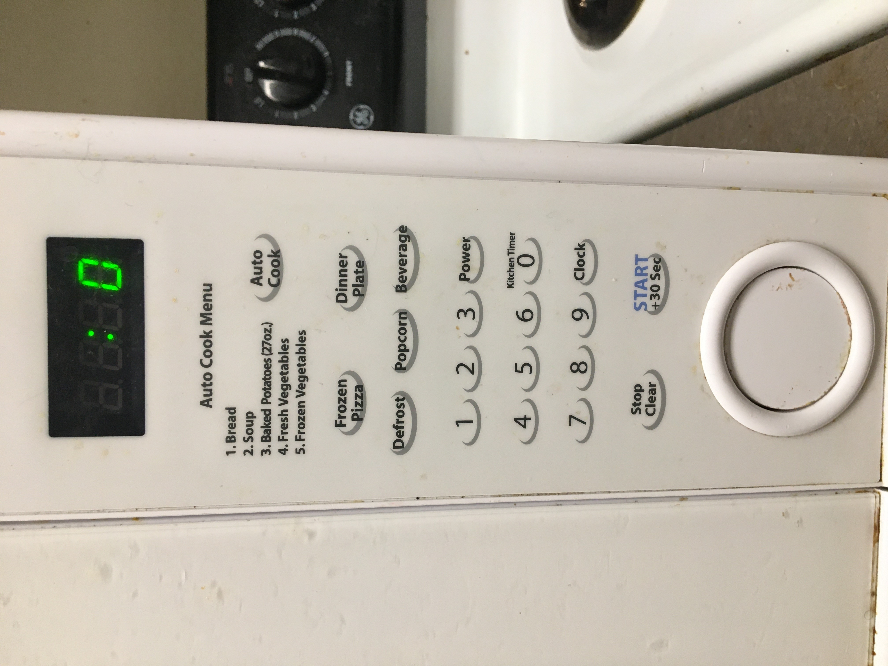

Part C

The Control Interface is crowded with auto cook options that nobody uses.
Most of the time the options are inconsistent for brands and products and thus produce unreliable results.
Part B
Common sequence of actions involve opening the door and putting in the food to be heated.
And then setting the timer and waiting until its done.
The microwave gives a beep sound to let the user know that their input has been registered.
The timer updates to let the user know how long it will take to complete cooking.
Once that is done, the microwave will beep to let the user know its done.
Common mistakes of this design are all to do with auto-cook.
It is very unreliable as different items and sizes of portion are not taken into account.
My rough sketch aims to simplify things.
The keypad is the main focus and will have the biggest footprint in the microwave.
In addition, the most important settings for me are power and sound.
Sound is important because it takes accessibility into account and allows all users to know whaat they are typing in.
This can also be used in the dark to input numbers accurately.
Part A
Video
Link to YouTube video : https://youtu.be/RfVIK4YbD8k
Link to Github code : https://github.com/lawzeem/p1LawzeemLatif
To run, open the p1LawzeemLatif folder and open p1LawzeemLatif.pde